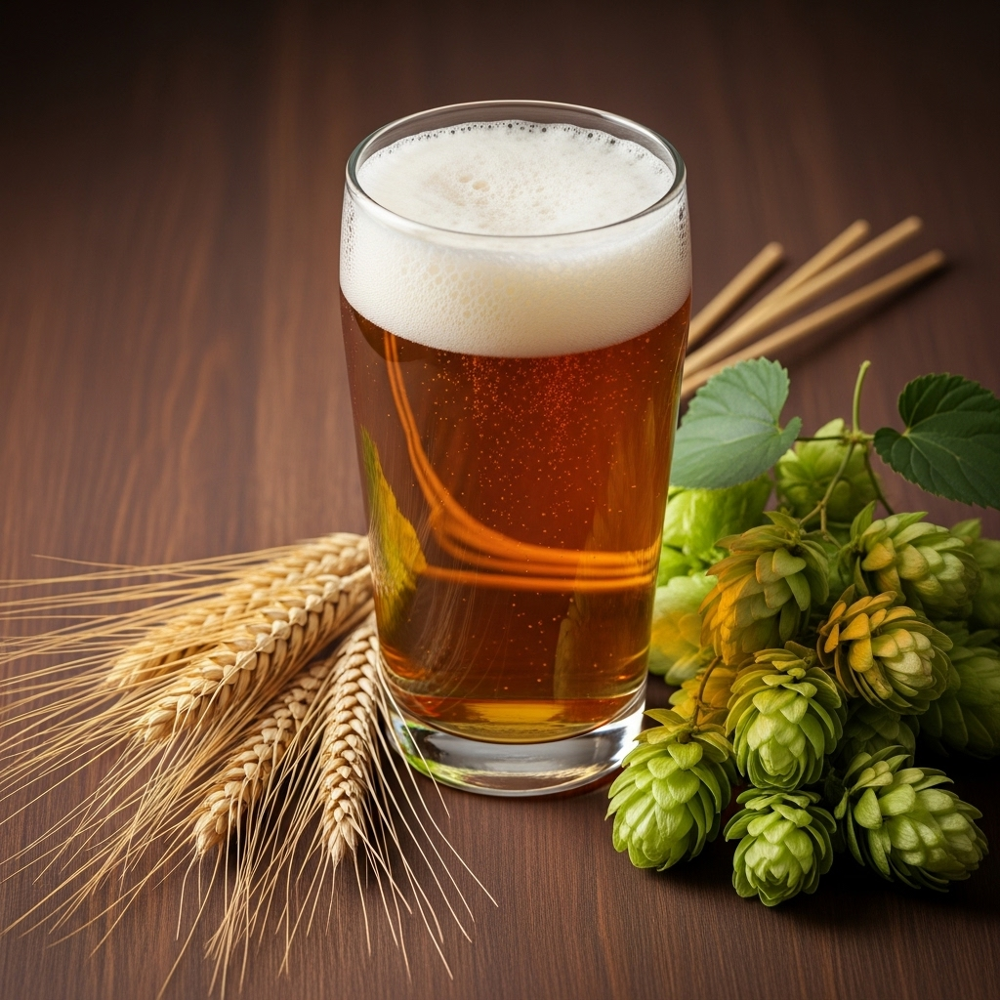

CORSO DI BIRRA – OTTOBRE 2025
Quattro serate per scoprire il mondo della birra artigianale, tra tecnica, cultura e piacere della degustazione. Il corso è pensato per chi vuole approfondire le proprie conoscenze, imparare a degustare con consapevolezza e riconoscere le caratteristiche che rendono ogni birra unica.Inizieremo dalle basi della produzione per capire come, partendo da soli quattro ingredienti, nascano stili così diversi. Analizzeremo gli stili birrari di Germania, Belgio, Inghilterra e USA, esplorando le loro caratteristiche attraverso l’assaggio. Parleremo di degustazione, equilibrio, possibili difetti, servizio, conservazione e abbinamento con il cibo.
Ogni serata prevede la degustazione guidata di 4 birre. Al termine del corso, è previsto un piccolo esame finale con rilascio di attestato di partecipazione.
Quando: Venerdì 10, 17, 24 e 31 ottobre 2025
Orario: 20:30 – 23.00 circa
Dove: Novoli, Firenze (luogo da confermare)
Costo: €120 – Sconto 5% per iscrizioni entro il 15 luglio
Posti limitati

Venerdì 10 Ottobre
- La produzione: una magia da 4 ingredienti
- Degustare correttamente
- 4 birre in degustazione
Venerdì 17 Ottobre
- La Germania e i suoi stili birrari
- Valutare la birra: equilibrio e difetti
- 4 birre in degustazione
Venerdì 24 Ottobre
- Il Belgio e i suoi stili birrari
- Servizio e conservazione
- 4 birre in degustazione
Venerdì 31 Ottobre
- Inghilterra e USA
- Abbinamento cibo e birra
- 4 birre in degustazione